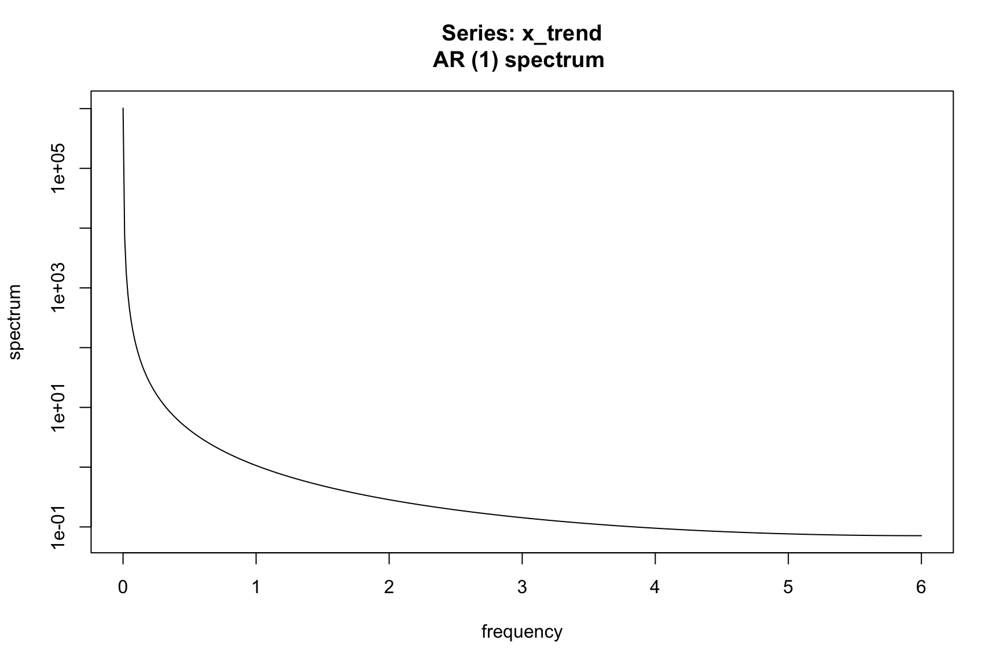

observed <- AirPassengers
filter_trend = c(1/24, rep(1/12, 11), 1/24)
trend = stats::filter(observed, filter = filter_trend, sides = 2)
tsbox::ts_plot(observed, trend)
You are reading an early draft of Seasonal Adjustment in R. This chapter should be readable but needs polishing.
It is part of the course materials intended for Jan 21, 2023.
One of the two main methods available in X-13ARIMA-SEATS to extract trend and seasonal components is the X-11 method. This is a nonparametric procedure that works by passing moving-average filters over the data to extract the intended components. Since both X-11 and SEATS apply filters to time-series, we start with a general discussion on seasonal decomposition that applies both to X-11 and STEATS. SEATS will be discussed in greater detail in Chapter 7.
As we have seen in the previous chapters, the core of seasonal adjustment is the decomposition of a time series into a trend, a seasonal and and irregular component. As we have seen in Section 4.2, we write the fundamental identity as:
\[ X_t = T_t + S_t + I_t \]
where, \(X_t\) is the observed time series, \(T_t\) the trend, \(S_t\) the seasonal component and \(I_t\) the irregular component. Once the decomposition is done, the seasonally adjusted series for an additive1 decomposition can be computed as:
For a multiplicative decomposition, the fundamental identity is
\[ X_t = T_t \cdot S_t \cdot I_t \]
and the adjusted series is:
\[ A_t = \frac{X_t}{S_t} \]
\[ A_t = X_t - S_t \]
How to perform the seasonal decomposition? Ultimately, both X-11 and SEATS estimate the components \(T_t\), \(S_t\), \(I_t\) by passing moving average filters over the series. In order to get unbiased results at the margin, the underlying series is usually extended by forecasts from the regARIMA model discussed in the Chapter 5. This regARIMA model also serves as the foundation of the initial steps in the X11 algorithm to remove outliers and other regression effects before application of moving-averages.
How do we apply moving average filters over a series? The trend component can be estimated by applying a moving average over the observed series. For each point in time, an simple average that uses a certain number of observations both on the left and the right of the series. Because the window is symmetric, we need the series extended by forecasts and backcasts.
Once the trend component is computed, we can subtract it from the original series to compute a detrended series.
In order to better understand the X-11 method, it will be helpful to first perform a basic seasonal adjustment procedure “by-hand”. A basic trend filter could be a simple 2x12 moving average. This filter has weights 1/24, 1/12, 1/12, 1/12, 1/12, 1/12, 1/12, 1/12, 1/12, 1/12, 1/12, 1/12, 1/24. We use these weights to estimate the trend of the AirPassengers series.
observed <- AirPassengers
filter_trend = c(1/24, rep(1/12, 11), 1/24)
trend = stats::filter(observed, filter = filter_trend, sides = 2)
tsbox::ts_plot(observed, trend)
After estimating the trend we now can estimate the seasonal component of the detrended series using a 3x3 seasonal filter that has weights (1,2,3,2,1)/9 applied to the same season.
detrended <- observed - trend
filter_seas = c(1, rep(0, 11), 2, rep(0, 11), 3, rep(0, 11), 2, rep(0, 11), 1) / 9
seasonal = stats::filter(detrended, filter = filter_seas, sides = 2)
tsbox::ts_plot(detrended, seasonal)
By subtracting this seasonal estimate we have our crude seasonal adjustment.
adjusted = observed - seasonal
tsbox::ts_plot(observed, adjusted)
This basic seasonal adjustment is a useful tool to understand other features of X-13. The most obvious thing we see in this plot is the last of seasonal adjustment at the ends of the series. Hence, why we need to use regARIMA modeling to forecast extend. Additionally, we see some obvious flaws this this adjustment. It is difficult to estimate a trend in the presence of seasonality. Similarly, it is difficult to estimate the seasonal factors when the trend is poorly estimated/removed.
This motivates the X-11 method which is an iterative application of this simple procedure we have just performed. Each subsequent iteration allows the estimated components to be refined by selecting better filters and handling extreme values and regression effects. The first adaptation is to consider a transformation of our series from AirPassengers to log(AirPassengers). Our simple example performed an additive seasonal adjustment. This transformation will require a move to a multiplicative decomposition.
In order to use symmetric moving average filters at the end of the time series (current value), a regARIMA model is used to forecast extend the series. This regARIMA model is where users can test for or specify outliers, trading day and moving holiday regressors in their adjustment. The forecast extended series is then used to filter.
Additionally, X-11 has a built in extreme value procedure included. This procedure identifies extremes and replaces. This results in a robust procedure that can automatically choose filters and identify extreme values without much user intervention. All that needs to be evoked beyond the default seas() call is to turn on the X11 spec option.
m <- seas(AirPassengers, x11 = "")
summary(m)
#>
#> Call:
#> seas(x = AirPassengers, x11 = "")
#>
#> Coefficients:
#> Estimate Std. Error z value Pr(>|z|)
#> Weekday -0.0029497 0.0005232 -5.638 1.72e-08 ***
#> Easter[1] 0.0177674 0.0071580 2.482 0.0131 *
#> AO1951.May 0.1001558 0.0204387 4.900 9.57e-07 ***
#> MA-Nonseasonal-01 0.1156204 0.0858588 1.347 0.1781
#> MA-Seasonal-12 0.4973600 0.0774677 6.420 1.36e-10 ***
#> ---
#> Signif. codes: 0 '***' 0.001 '**' 0.01 '*' 0.05 '.' 0.1 ' ' 1
#>
#> X11 adj. ARIMA: (0 1 1)(0 1 1) Obs.: 144 Transform: log
#> AICc: 947.3, BIC: 963.9 QS (no seasonality in final): 0
#> Box-Ljung (no autocorr.): 26.65 Shapiro (normality): 0.9908
#> Messages generated by X-13:
#> Warnings:
#> - Visually significant seasonal and trading day peaks have
#> been found in one or more of the estimated spectra.Before further discussion about the details of the X-11 process, let us see what happened during this modeling run. A variant of the simple decomposition performed in Section Section 6.2 is run 3 times along with a pre-processing step to fit a regARIMA model. This procedure can be seen in great detail in Ladiray and Quenneville (2012). The overview of each step:
Prior adjustments including regARIMA modeling of outliers, trading day and moving holiday effects.
First application of seasonal decomposition. Calculate initial extreme value weights.
Second estimation of seasonal and trend. Final estimation of extreme value weights.
Final estimation of seasonally adjusted series, seasonal factors, trend, irregular. Combined factors incorporate the trading day and moving holiday regression effects estimated in Part A
We will discuss extreme values and outliers in more detail in Chapter 10.
The terms outlier and extreme value seem interchangeable. In X-13, these refer to very different types of effects. An outlier is identified by the regARIMA model in Part A of the X-11 method. An extreme value is a value that is large enough to effect the results of a moving-average filter but is not identified by the regARIMA automatic modeling identification. Outliers are prior-adjusted out of the series while extreme values are replaced within the X-11 procedure.
Both types end up in the seasonally adjusted series. Extreme values are assigned to the irregular component and are hence included in the seasonally adjusted series. Outliers get included in Part D when X-11 calculates the final seasonal factors using the original series including outlier effects.
During these steps the trend filter is automatically chosen based the noise-to-signal ratios, labeled I/C in the output file. The seasonal moving average is determined by the Global Moving Seasonality Ratio (GMSR). Being able to understand the
When using the x11 spec you can change the length of the filter used for the trend and seasonal components with the trendma and seasonalma arguments respectively. Additionally, sigmalim will control the amount of extreme value adjustment that is done during the seasonal adjustment.
We present the following as optional reading material. For those interesting in simply performing seasonal adjustment, an understanding of the frequency domain of a time series, is not mandatory. However, the spectral domain representation will help the interested reader further understand the impact a linear filter has on a time series. Since both X-11 and SEATS use linear filters this will deepen the users understanding of whichever seasonal adjustment procedure is chosen.
Seasonal adjustment is highly motivated by the study, estimation, and ultimately removal of regular fluctuations in a time series. The words regular fluctuations immediately leads us to trigonometric functions sine and cosine. It turns out, there exist two equivalent representations of a time series. The first, and usually easier for beginners to understand, is the time domain representation. This is expressing how \(X_t\) evolves as time \(t\) evolves. For example, an MA(1) time domain representation:
\[X_t = w_t + \theta w_{t-1}\]
The second, is a frequency domain representation of a series. Here, \(X_t\) is represented as the sum of trigonometric functions. More specifically, the spectral density of \(X_t\) is the fourier transform of the acf of the series. \[f_X(\nu) = \sum_{h = - \infty}^{\infty} \gamma(h) e^{-2\pi i \nu h}\] For example, the spectral density of an MA(1) is: \[f_X(\nu) = \sigma^2 \left( 1 + \theta^2 + 2\theta\cos(2\pi\nu) \right)\]
The important concept here is to understand that these representations are equivalent; meaning they contain the same information about a time series, such as encoding the acf function.
The spectral density of an uncorrelated sequence with variance \(\sigma^2\) is simply \(f(\nu) = \sigma^2\). Notice this is not a function of any frequencies but just a constant for any \(\nu\). Hence, it is a stochastic process that equally weight all frequencies in the spectrum. This is precisely where the names white noise comes from as white light has the same property of reflecting all color bands equally, combining to produce white light.
Now that we know we can express a time series either in the time domain or as a sum of sin and cosine curves, we get to the important part for seasonal adjustment - how does a linear filter effect the input series? Assume we want to pass a moving-average linear filter over our data \(X_t\) with weights \(\ldots, w_{-2}, w_{-1}, w_{0}, w_{1}, w_{2}, \ldots\). Assume the output of the linear filter will be \(Y_t\) such that \[Y_t = \sum_{j = -\infty}^{\infty} w_j X_{t+j} = \ldots + w_{-2}X_{t-2} + w_{-1}X_{t-1} + w_{0}X_{t} + w_{1}X_{t+1} + w_{2}X_{t+2} + \ldots\] This type of linear filter can be expressed as a linear operator in terms of the backshift operator \(B\) , where \(BX_t = X_{t-1}\) and \(B^{-1}X_t = X_{t+1}\). \[W(B) = \ldots + w_{-2}B^2 + w_{-1}B + w_{0} + w_{1}B^{-1} + w_{2}B^{-2} + \ldots\] and hence \(Y_t = W(B)X_t\). We can now express the spectral density of \(Y_t\) in terms of the input spectral density \(X_t\). \[f_Y(\nu) = \underbrace{\lvert W(e^{2\pi i \nu}) \rvert^2}_{\text{Square Gain Function}} f_X(\nu)\]
There is some mathematical machinery needed when understanding exactly what the square-gain function, \(\lvert W(e^{2\pi i \nu}) \rvert^2\), is. However, for the sake of this text we just know that it tells us exactly the frequencies of \(X_t\) that amplified in the output \(Y_t\) as well as the frequencies of \(X_t\) that will be annihilated (when the square-gain function equals 0).
Let’s look at an example spectrum for the airline model. Instead of deriving the result, the following code simulates observations from an airline model with \(\theta = .5\) and \(\Theta = .9\). The spectrum is then estimated using a parametric estimator using the spec.ar function. Details of this estimation can be found in (Brockwell and Davis).
library(forecast)
#> Registered S3 method overwritten by 'quantmod':
#> method from
#> as.zoo.data.frame zoo
set.seed(123)
model <- Arima(y = ts(rnorm(1000),freq=12),
order=c(0,1,1),
seasonal=c(0,1,1),
fixed=c(theta=-0.5, Theta=-0.9))
x <- simulate(model, nsim=10000)
fx = spec.ar(x, order = 36, plot = TRUE)
# Pass a trend filter over data
x_trend = stats::filter(x, filter = filter_trend, sides = 2)
fx_trend = spec.ar(x_trend, na.action = na.pass)
# Remove trend to leave seasonal + irregular
x_seasonal = x - x_trend
fx_seasonal = spec.ar(x_seasonal, na.action = na.pass)

We introduce the moving average filters and subsequently plot the filter weights along with the values of the squared gain function. The X-11 spec also allows users to control the length of the trend and seasonal moving average filters used during the adjustment. Generally speaking, longer filters imply a more stable seasonal component and shorter filters a more changing seasonal pattern. Of course, a longer filter will use more data for the calculation of components at each time point. This is an important observation and understanding it might help a user decide on a short or long filter. Since longer filters use more data there tend to be smaller revisions when a new data point is added. However, there will be revisions to data values further back.
A shorter filter is just the opposite, they tend to produce larger revisions but they do not extend as far back into the series. If a filter is not choosen by the user then automatic filter selection is used. To understand the length of a filter let’s look at the (finite) number of choice available in during an x11 adjustment. Table 6.1 shows the different filters available for the seasonal component and the trend component.
| Value | Description |
|---|---|
s3x1 |
3×1 moving average |
s3x3 |
3×3 moving average |
s3x5 |
3×5 moving average |
s3x9 |
3×9 moving average |
s3x15 |
3×15 moving average |
stable |
Stable seasonal filter. A single seasonal factor for each calendar month or quarter is generated by calculating the simple average of all the values for each month or quarter (taken after detrending and outlier adjustment). |
x11default |
A 3×3 moving average is used to calculate the initial seasonal factors in each iteration, and a 3×5 moving average to calculate the final seasonal factors. |


The X11 method is sensitive to outliers. Beyond the specified regressors (AOs, level shifts, temporary changes, etc), an X11 adjustment will replace extreme values after the initial crude trend estimation occurs in the first iteration of the X11 method. The replacement procedure looks as follows:
flowchart LR
A( Estimate standard deviation <br> of irregular, s )-->B(Compare SI-ration to <br> multiples of s)
B-->C(SI < 1.5 * s)
B-->D(1.5 * s < SI < 2.5 * s)
B-->E(SI > 2.5 * s)
C --> F(SI unchanged)
D --> G(SI linearly weighted)
E --> H(SI fully weighted)
Users can change the multiples of \(\sigma\) that are converted to extreme values. This is done with the sigmalim option within the x11 spec. This option should be a vector of length 2 that specifies when weighting should begin and when full weight of zero should be applied. Between the endpoints of the specified vector a linear weight will be applied. SI ratios are replaced with an average of the two nearest SI ratios from the same month/quarter. One caveat being that only fully weighted SI ratios are used for SI ratio replacement. Hence, if too small of a \(\sigma\) limit is used the SI ratios used to replace an extreme value should be many years away.
m = seas(AirPassengers, x11 = "")
unmodified_SIratio <- series(m, "d8")
modified_SIratio <- series(m, "d9")
seasonal_factors <- series(m, "d10")
tsbox::ts_dygraphs(cbind(unmodified_SIratio, modified_SIratio, seasonal_factors))m = seas(AirPassengers, x11 = "", x11.sigmalim = c(1, 2))
unmodified_SIratio <- series(m, "d8")
modified_SIratio <- series(m, "d9")
seasonal_factors <- series(m, "d10")
tsbox::ts_dygraphs(cbind(unmodified_SIratio, modified_SIratio, seasonal_factors))It should be noted that extreme value choices can greatly affect the seasonal adjustment.
In a multiplicative adjustment, the detrended series is called the SI ratio. It is an estimate of the seasonal component. The SI ratio is used to identify extreme values during the initial and intermediate steps of the X-11 method.
The X-13ARIMA-SEATS development was highly motivated to study economic time series. As such, the default seasonal adjustment mode is multiplicative due to most seasonal economic time series displaying seasonal fluctuations that increase and decrease along with the level of the time series.
If your series does not have this feature then additive adjustment might be more appropriate. This can be changed in the mode argument of the x11 spec. For example, seas(x, x11.mode = 'add') will perform an additive x11 run. There exist two other models for decomposition, pseudo-additive and log additive. These are less common than additive and multiplicative models and are not the focus of this text. If your series has some extremely small values in certain months (quarters) then pseudo-additive models could be worth further investigation. It has been observed that when multiplicative seasonal adjustment produces more extreme values in conjunction with small seasonal factors then pseudo-additive adjustment should be explored.